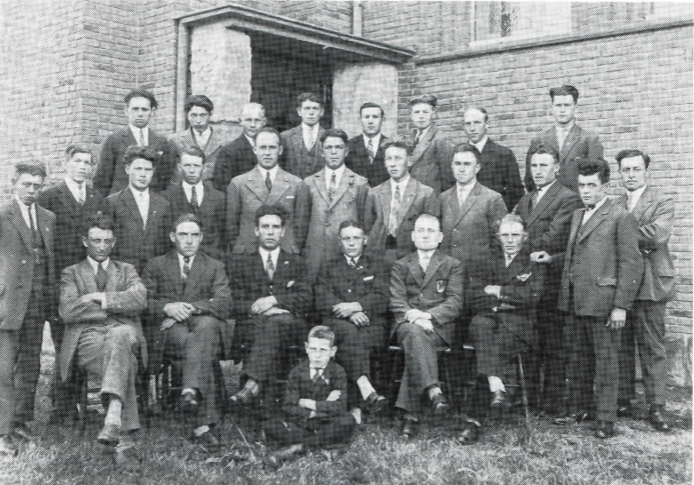
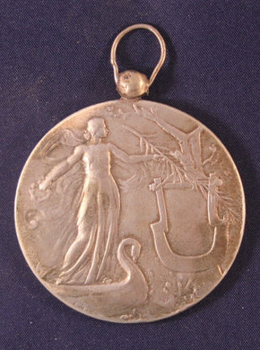
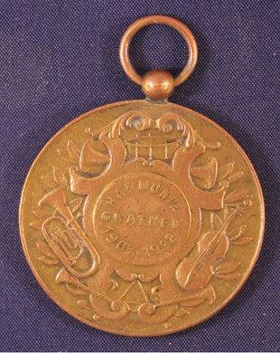
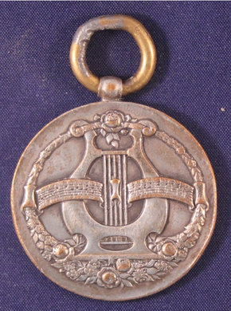

1923 · Hoe begon het?
Iedereen heeft bij zijn geboorte al het mooiste instrument gekregen
In de zomer van 1923 raakten enkele jonge mannen in gesprek bij het kapelletje van de Drie Gezusters. Het idee ontstond om een muziekvereniging op te richten, een fanfare zoals in het naburige dorp Ell.
De toenmalige pastoor en een van de jonge mannen vreesden echter dat de aanschaf van instrumenten in zo'n kleine dorpsgemeenschap tot financiële problemen zou leiden. Terwijl ieder al een eigen instrument bezat: de stem. Het besluit om een mannenkoor op te richten was snel genomen.
Eerst werd gerepeteerd in de huiskamer van de voorzitter. Door het enthousiasme van de drie jonge mannen groeide het ledental snel; met zeventien man in een huiskamer ging het niet meer. Eendracht verhuisde naar Café Lenders en in 1925 naar de Corneliszaal.

Repetitielokalen door de jaren
Van huiskamer tot Bi-j Sanne
De huiskamer van een lid. Door de snelle groei al gauw te klein.
Café Lenders, daarna de St. Corneliuskapel (Corneliszaal, vanaf 1925).
De kapel wordt afgebroken; het koor verhuist naar café de Smeed. Na de afbraak daarvan tijdelijk een noodhuisvesting.
Café Plexat, gebouwd op de plek van de Smeed.
Hetzelfde gebouw, nieuwe beheerder: we repeteren bij Bi-j Sanne, elke woensdag van 20.00 tot 22.00 uur, met pauze rond 21.00 uur. En na de tweede helft volgt natuurlijk een derde.
1940 – 1945
Geen Kulturkammer, wél een kerkkoor
In de oorlogsjaren bleef het koor actief, maar weigerde lid te worden van de door de bezetter verplichte Kulturkammer. Door als kerkkoor te fungeren kon het koor blijven zingen en werd bovendien inbeslagname van bezittingen voorkomen.
Na de bevrijding werd Eendracht weer een mannenkoor. Het koor organiseerde muziekavonden en zocht contact met collega-koren. Daaruit ontstond de Midden Limburgse Zangers Bond, later door KNZV-Limburg (Koninklijk Nederlands Zangers Verbond) omgevormd tot de Midden-Limburgse Zangersbond.
Medailles uit de beginjaren



Onze dirigenten
Tien dirigenten in honderd jaar
In 100 jaar werd het koor geleid door in totaal tien dirigenten. De laatste vier, Alofs, Hans Braun, Martin Jaspers en Paul Koolen, waren lang en nauw aan het koor verbonden. Paul Koolen staat nog altijd voor het koor. Hans Braun, 25 jaar dirigent, werd benoemd tot ere-dirigent.
Ontwikkeling van het ledental
Van drie naar 64, nu 43
Het ledental groeide gestaag. Het grootste aantal ooit was 64 zangers. Momenteel telt het koor 43 leden, afkomstig uit Swartbroek, Weert en Leudal.
Muziekbibliotheek
206 liederen bewaard
Alle in honderd jaar ingestudeerde liederen worden bewaard door muziekbibliothecaris Johan Beerens. Liederen in allerlei talen en genres, plus een aantal bekende missen.
Onze liederen
Van Toon Hermans tot The Beatles
In 100 jaar zijn vele liederen ingestudeerd. Werk van Toon Hermans, The Beatles en Guus Meeuwis, maar ook Plaisir d'amour (bekend van Nana Mouskouri), The Piano Man, Homeward Bound en Hallelujah. Daarnaast zingt het koor een aantal bekende missen. Eendracht laat graag van zich horen, in en buiten het dorp.
Speciaal voor Eendracht geschreven
Hoort, Mannenzang
Voor het 75-jarig jubileum schreef oud-lid Wiel Goossens op de melodie van het Schotse Auld Lang Syne het Eendracht-lied "Hoort, Mannenzang".
Het lied van Swartbroek
De tekst van het "Leedje van Swartbroek" schreef Wiel Goossens samen met Lei Beelen. Lei Beelen schreef ook de tekst van het Ave Maria in dialect.
2023
Heel 2023 was ons jubileumjaar

13 mei
Dagje uit
Zangers met partners op pad naar Haps en Arcen.
17 juni
Feestavond en receptie
Heilige Mis, receptie en feest op de dag dat het koor precies 100 jaar bestond.
14 oktober
Boek en cd
Concert met presentatie van het jubileumboek en de cd vol zang van het koor.
17 december
Kerstconcert
Met solisten en meerdere koren. Burgemeester Vlecken reikte de Koninklijke Erepenning uit.
Downloads
Het boek en het fotoarchief
Voor het 100-jarig bestaan is een boek gemaakt met alles van het prille begin, moeilijke tijden, concerten, oorkondes en medailles tot nu. Tijdens de presentatie op 14 oktober 2023 werd ook een fotopresentatie van honderd jaar Eendracht getoond.